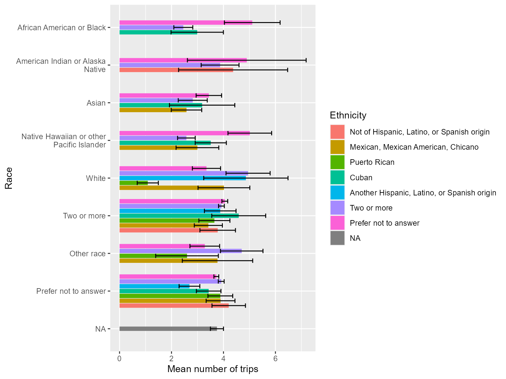

To calculate trip rates we first need to prepare the data. We can do
this using hts_prep_triprate
library(travelSurveyTools)
library(ggplot2)
data("test_data")
data("variable_list")
data("value_labels")
prepped_triprates_list = hts_prep_triprate(
variables_dt = variable_list,
trip_name = "trip",
day_name = "day",
hts_data = test_data
)After preparing the data we can create a summary using
hts_summary.
hts_summary(
prepped_dt = prepped_triprates_list$num,
summarize_var = "num_trips_wtd",
summarize_vartype = "numeric"
)## $n_ls
## $n_ls$unwtd
## $n_ls$unwtd$`Count of unique day_id`
## [1] 4021
##
## $n_ls$unwtd$`Count of unique person_id`
## [1] 1743
##
## $n_ls$unwtd$`Count of unique hh_id`
## [1] 821
##
##
## $n_ls$wtd
## NULL
##
##
## $summary
## $summary$unwtd
## count min max mean median
## <int> <num> <num> <num> <num>
## 1: 4021 0 66.63636 6.635024 3.631111We can also summarize trip rates by one or more variables.
job_type_triprate_list = hts_prep_triprate(
variables_dt = variable_list,
summarize_by = "job_type",
trip_name = "trip",
day_name = "day",
hts_data = test_data
)
num_trips_job_type = hts_summary(
prepped_dt = job_type_triprate_list$num,
summarize_by = "job_type",
summarize_var = "num_trips_wtd",
summarize_vartype = "numeric",
wtname = "day_weight",
weighted = TRUE
)$summary$wtd
# Label job_type
num_trips_job_type_labeled = factorize_df(
num_trips_job_type,
value_labels,
value_label_colname = "label"
)
# Create a plot
ggplot(
num_trips_job_type_labeled,
aes(x = median, y = job_type)
) +
geom_bar(stat = "identity") +
scale_y_discrete(
labels = function(x) stringr::str_wrap(x, width = 50),
limits = rev
) +
labs(
x = "Median number of trips",
y = "Job Type"
)
race_ethnicity_triprate_list = hts_prep_triprate(
variables_dt = variable_list,
summarize_by = c("race", "ethnicity"),
trip_name = "trip",
day_name = "day",
hts_data = test_data
)
num_trips_race_ethnicity = hts_summary(
prepped_dt = race_ethnicity_triprate_list$num,
summarize_by = c("race", "ethnicity"),
summarize_var = "num_trips_wtd",
summarize_vartype = "numeric",
wtname = "day_weight",
weighted = TRUE,
se = TRUE
)$summary$wtd
# label data
num_trips_race_ethnicity_labeled = factorize_df(
num_trips_race_ethnicity,
value_labels,
value_label_colname = "label"
)
# Create a plot
ggplot(
num_trips_race_ethnicity_labeled,
aes(x = mean, y = race, fill = ethnicity)
) +
scale_y_discrete(
labels = function(x) stringr::str_wrap(x, width = 30),
limits = rev
) +
geom_bar(stat = "identity", position = position_dodge2(preserve = "single", width = 0)) +
geom_errorbar(
aes(
xmin = (mean - mean_se),
xmax = (mean + mean_se)
),
position = position_dodge2(preserve = "single", width = 0)
) +
labs(
x = "Mean number of trips",
y = "Race",
fill = "Ethnicity"
)